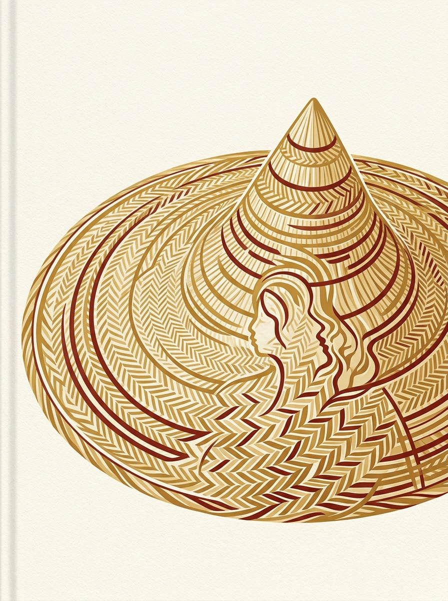
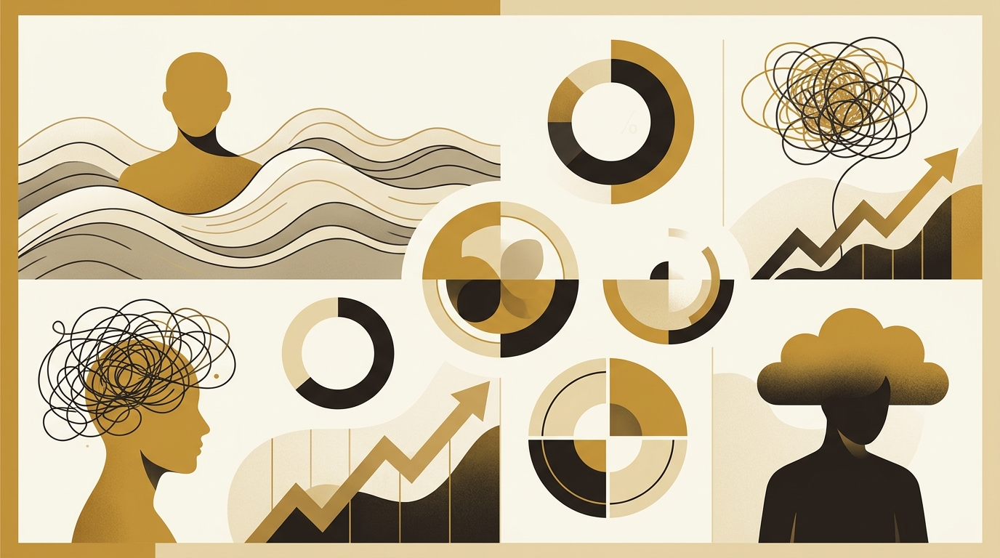
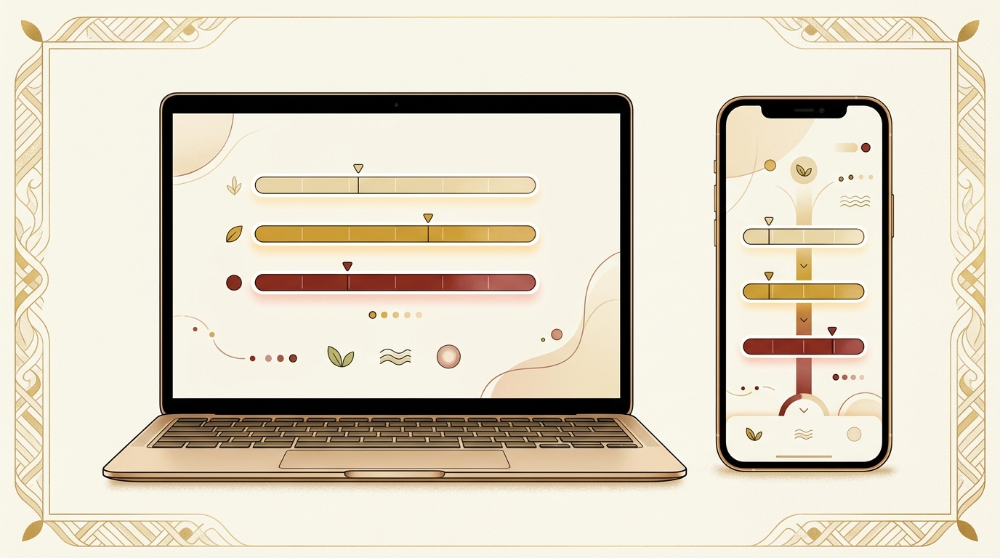
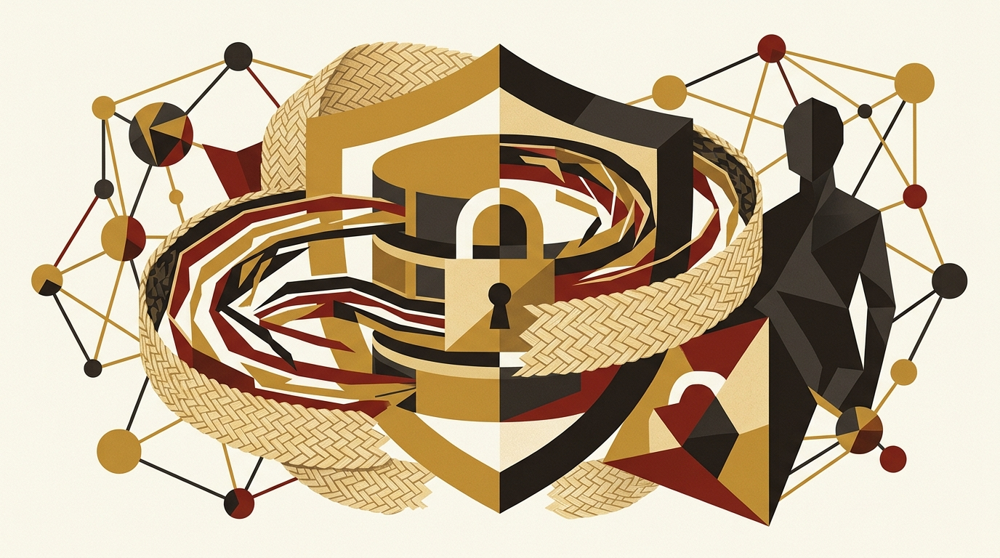
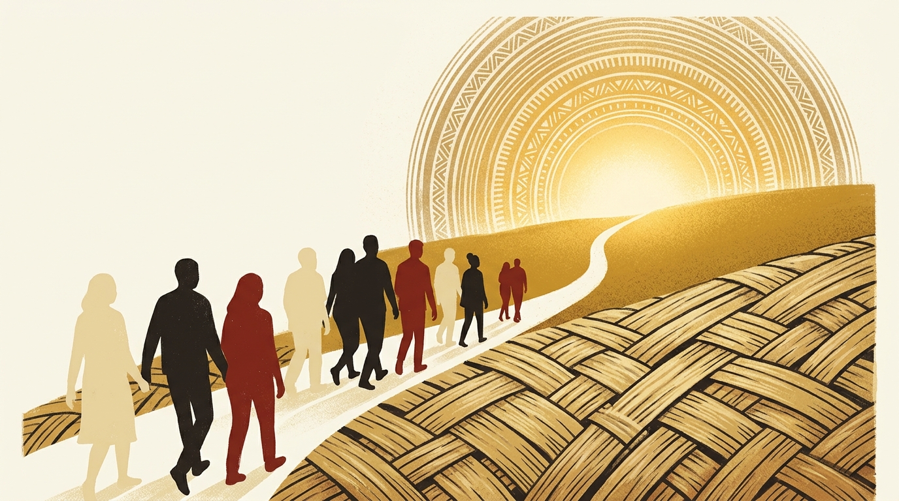

Laporan Eksekutif
Platform Saringan Kesihatan Mental DASS-21
untuk Warga Politeknik Mukah
Menangani Stres, Keresahan & Kemurungan
di Kalangan Staf & Pelajar
Disediakan untuk Pengurusan Politeknik Mukah · Sulit & Dalaman
Kata Alu-Aluan
Politeknik Mukah sentiasa mengutamakan kesejahteraan holistik setiap warganya — daripada pelajar yang baru melangkah ke alam pendidikan tinggi, hinggalah pensyarah dan staf yang menjadi tulang belakang institusi ini.
Dalam era pasca-pandemik yang penuh tekanan dan ketidakpastian, keperluan untuk memantau kesihatan mental secara berkala, sulit dan tanpa stigma menjadi semakin mendesak. Data daripada Tinjauan Kebangsaan Kesihatan dan Morbiditi (NHMS) 2023 menunjukkan hampir satu daripada empat orang dewasa bekerja di Malaysia melaporkan cabaran kesihatan mental — namun majoriti tidak pernah mendapatkan penilaian profesional.
SaringMinda hadir sebagai jawapan digital kepada jurang ini. Dibangunkan khas untuk ekosistem Politeknik Mukah, platform ini membolehkan setiap individu menilai tahap stres, keresahan dan kemurungan mereka secara peribadi melalui instrumen DASS-21 yang diiktiraf KKM — tanpa perlu mendedahkan identiti, tanpa rasa segan, tanpa rasa takut.
Laporan ini membentangkan kepada pihak pengurusan satu gambaran menyeluruh tentang mengapa SaringMinda dibina, bagaimana ia berfungsi, dan apakah potensinya dalam mentransformasi pendekatan kita terhadap kesejahteraan mental di PMU.
Mari kita jadikan PMU bukan sahaja pusat kecemerlangan akademik, tetapi juga institusi yang benar-benar menjaga hati dan minda warganya.
Konteks Nasional

Program NODiP (2023–2025) mendapati 16.91% pekerja yang disaring berisiko mengalami gangguan psikososial berkaitan kerja — dikaitkan dengan beban tugas berlebihan, tekanan masa dan reka bentuk kerja yang tidak seimbang.
DOSH telah memperkenalkan Garis Panduan Pengurusan Risiko Psikososial di Tempat Kerja (2024) sebagai respons.
Beban pengajaran, pentadbiran dan penyelidikan boleh menyebabkan burnout yang tidak disedari.
Tekanan akademik, kewangan dan peralihan kehidupan — kumpulan 16–29 tahun mencatatkan prevalens kemurungan tertinggi (7.6–7.9%).
Instrumen Saringan
Depression, Anxiety and Stress Scales – 21 Items (DASS-21) ialah instrumen psikometrik yang dibangunkan oleh Lovibond & Lovibond (1995, Psychology Foundation of Australia) dan telah divalidasi secara meluas dalam konteks Malaysia oleh Kementerian Kesihatan Malaysia (KKM).
⚠️ DASS-21 ialah alat saringan, bukan alat diagnosis. Keputusan saringan bukan diagnosis klinikal.
Setiap subscale mengandungi 7 item. Responden menilai pengalaman "seminggu yang lepas" pada skala 0–3.
Keresahan, kecenderungan melampau, mudah tersinggung
Item: 1, 6, 8, 11, 12, 14, 18
Debaran jantung, panik, takut tanpa sebab
Item: 2, 4, 7, 9, 15, 19, 20
Tiada harapan, tidak bersemangat, rasa tidak berharga
Item: 3, 5, 10, 13, 16, 17, 21
| Tahap | Kemurungan | Anzieti | Stres |
|---|---|---|---|
| Normal | 0 – 5 | 0 – 4 | 0 – 7 |
| Ringan | 6 – 7 | 5 – 6 | 8 – 9 |
| Sederhana | 8 – 10 | 7 – 8 | 10 – 13 |
| Teruk | 11 – 14 | 9 – 10 | 14 – 17 |
| Sangat Teruk | 15+ | 11+ | 18+ |
Dinyalakan secara bebas daripada tahap keterukan jika:
Item 21 ("Saya rasa hidup ini tidak bererti lagi") ≥ 1, ATAU
Item 10 ("Saya rasa tidak ada apa yang saya harapkan") ≥ 2
Platform Digital

SaringMinda ialah platform saringan kesihatan mental digital yang dibangunkan khas untuk Politeknik Mukah. Ia menerjemahkan instrumen DASS-21 ke dalam pengalaman interaktif yang mesra pengguna, selamat dan berbudaya Melanau — semuanya diakses menerusi pelayar web tanpa sebarang pemasangan.
Tiada log masuk, tiada pengumpulan data peribadi. Skor dikira sepenuhnya di peranti pengguna.
Reka bentuk visual berasaskan terendak Melanau — palet emas nipah, merah lacquer, dan motif anyaman.
Keseluruhan saringan boleh disiapkan dalam masa 5 minit, pada bila-bila masa dan di mana-mana sahaja.
Dioptimumkan untuk telefon bimbit (375px) hingga desktop (1440px). Tiada pemasangan aplikasi.
Pembangunan:
Infrastruktur:
Ciri Utama 01
Privasi adalah tiang utama SaringMinda. Setiap reka bentuk keputusan — dari seni bina pangkalan data hingga alur pengguna — dibuat untuk melindungi kerahsiaan responden sambil tetap memberikan data agregat bermakna kepada kaunselor.
Persetujuan Bermaklumat
Responden membaca penafian KKM dan dasar privasi. Butang "Mula Saringan" hanya aktif selepas kotak persetujuan ditandakan.
UUID Sesi (Dalam Memori Sahaja)
Satu UUID sesi dijana secara rawak dalam memori pelayar. Ia tidak disimpan dalam localStorage, kuki, atau URL — hilang apabila tab ditutup.
21 Soalan (Seminggu Yang Lepas)
Setiap soalan dijawab pada skala 0–3. Bar kemajuan 21 jalur anyaman menunjukkan perkembangan. Semua jawapan wajib.
Pengiraan Skor Sisi Klien
Skor dikira sepenuhnya dalam pelayar pengguna — tiada jawapan dihantar ke pelayan untuk diproses.
Responden tidak perlu mendaftar atau memasukkan sebarang pengenalan diri untuk memulakan saringan.
Row-Level Security di Supabase memastikan akaun anonim hanya boleh INSERT, tidak boleh SELECT.
UUID sesi wujud dalam memori sahaja. Muat semula halaman = sesi baru. Tiada jejak.
Setiap halaman hasil memaparkan peringatan: "DASS-21 ialah alat saringan, bukan alat diagnosis."
Ciri Utama 02
Apabila responden menyelesaikan 21 soalan, halaman keputusan mempersembahkan maklumat skor mereka dalam format yang mudah difahami, tidak menakutkan dan berasaskan tindakan.
Setiap subscale dipaparkan sebagai bar mendatar bersegmen, dengan penanda menunjukkan kedudukan skor.
Stres — Skor: 12 / 21
Anzieti — Skor: 6 / 21
Kemurungan — Skor: 3 / 21
Setiap tahap keterukan mempunyai cadangan tindakan yang khusus:
Normal
Kekalkan rutin penjagaan diri. Ulang saringan dari semasa ke semasa.
Ringan / Sederhana
Teknik relaksasi, pantau perasaan. Pertimbangkan berjumpa kaunselor.
Teruk / Sangat Teruk
Dapatkan penilaian profesional segera. Hubungi talian sokongan.
🚩 Krisis
Panel sokongan segera: Talian HEAL (15555), Befrienders Kuching (082-242800).
Ciri Utama 03
Apabila skor saringan mencapai tahap Sederhana atau lebih tinggi (atau mencetus bendera krisis), SaringMinda secara berhemah menawarkan responden peluang untuk berjumpa kaunselor — tanpa sebarang paksaan.
Borang identiti dipaparkan.
Nama, telefon, jabatan & skor dikongsi dengan Unit Kaunseling.
Hanya bilangan sahaja direkodkan.
Tiada identiti, tiada data peribadi.
Pangkalan data menguatkuasakan ini.
Borang menyesuaikan medan bergantung kepada jenis responden:
| Medan | Pelajar | Pensyarah / Staf |
|---|---|---|
| Nama Penuh | ✓ * | ✓ * |
| Jantina | ✓ * | ✓ * |
| No. Pendaftaran | ✓ * | — |
| No. Staf / Pekerja | — | ✓ (pilihan) |
| Kumpulan Perkhidmatan | — | ✓ * |
| Jawatan | — | ✓ * |
| Jabatan / Unit | ✓ * (6 jabatan) | ✓ * (13 unit) |
| Kelas / Semester | ✓ * | — |
| No. Telefon | ✓ * | ✓ * |
| E-mel | Pilihan | Pilihan |
| Waktu Sesuai | Pilihan | Pilihan |
| Catatan | Pilihan | Pilihan |
* Medan wajib. Persetujuan tambahan diperlukan sebelum penghantaran.
Ciri Utama 04
Kaunselor berdaftar mengakses papan pemuka yang dilindungi kata laluan di /admin. Dashboard ini menyatukan semua data saringan dan permohonan temujanji dalam satu antara muka yang intuitif.
Setiap kad permohonan memaparkan maklumat lengkap:
"Saya risau saya tidak boleh mengikuti ujian"
Stres 18 · Sangat Teruk — Anzieti 11 · Sangat Teruk — Kemurungan 5 · Normal
100 saringan terbaharu (anonim). Baris krisis diserlahkan merah jambu.
| Tarikh | Stres | Anzieti | Kemurungan | Krisis |
|---|---|---|---|---|
| 20 Sep, 14:30 | 18 · Sangat Teruk | 11 · Sangat Teruk | 5 · Normal | Ya |
| 20 Sep, 11:15 | 10 · Sederhana | 4 · Normal | 8 · Sederhana | — |
| 19 Sep, 16:40 | 6 · Normal | 3 · Normal | 2 · Normal | — |
Seni Bina Teknikal

Pelayar Responden
Menjawab 21 soalan → Skor dikira client-side → INSERT ke Supabase (anon key)
Supabase (PostgreSQL + RLS)
Menerima insert anonim. RLS menghalang SELECT oleh pengguna anonim. Data disimpan selamat.
Dashboard Kaunselor (Dilindungi)
Hanya pengguna berdaftar dalam admin_profiles boleh SELECT. Fungsi is_staff() mengesahkan kelayakan.
| Peranan | INSERT | SELECT |
|---|---|---|
| Anonim (Anon) | ✅ responses, screening_results, counseling_referrals | ❌ Tiada akses baca |
| Kaunselor (Auth + admin_profiles) | ✅ Semua | ✅ Semua |
21 item DASS-21 (teks BM, subscale)
Jawapan mentah (21 per responden)
Skor agregat + tahap + bendera krisis
Pendaftaran kaunselor (e-mel, peranan)
Permohonan temujanji sukarela. Rekod "Tidak" mengandungi tiada identiti (dikuatkuasakan oleh RLS). Rekod "Ya" mengandungi nama, telefon, jabatan, skor dan bendera krisis.
Reka Bentuk Dwi-Laluan
SaringMinda menyediakan dua laluan masuk yang berasingan — mengiktiraf bahawa konteks tekanan dan keperluan data kaunselor berbeza antara pelajar dan staf.
Halaman utama: /
Soalan DASS-21
21 item standard, sama untuk kedua-dua laluan.
Medan Temujanji
Konteks Tekanan Khas
Akademik, kewangan, peralihan kehidupan, tekanan rakan sebaya.
Halaman khas: /pensyarah
Soalan DASS-21
21 item standard, sama untuk kedua-dua laluan.
Medan Temujanji
Konteks Tekanan Khas
Beban pengajaran, pentadbiran, penyelidikan, burnout, kenaikan pangkat.
Kaunselor mempunyai dua tab dalam papan pemuka: Dashboard Utama (Semua / Pelajar) dan Dashboard Pensyarah & Staf. Setiap tab menapis statistik dan permohonan mengikut kategori — memudahkan prioriti dan tindakan susulan.
Hala Tuju Masa Depan

SaringMinda dibangunkan sebagai asas yang kukuh — platform yang akan terus berkembang seiring dengan keperluan institusi dan perkembangan amalan terbaik dalam kesihatan mental tempat kerja.
Eksport CSV untuk Kaunselor
Membolehkan data saringan agregat dimuat turun untuk analisis lanjut dan laporan berkala kepada pengurusan.
Carta Trend & Analitik Visual
Paparan graf interaktif — bilangan saringan dari masa ke semasa, taburan tahap keterukan, perbandingan jabatan.
Notifikasi E-mel untuk Kes Krisis
Makluman automatik kepada kaunselor apabila bendera krisis dicetuskan — mempercepatkan respons.
Sokongan Pelbagai Bahasa
Penambahan Bahasa Inggeris, Iban, dan bahasa tempatan lain untuk meningkatkan ketercapaian.
Integrasi dengan JPPKK & KKM
Pelaporan automatik ke Jabatan Pendidikan Politeknik dan Kolej Komuniti untuk pemantauan peringkat kebangsaan.
Mengenal pasti individu berisiko sebelum krisis berlaku.
Menyokong perancangan program kesejahteraan berasaskan bukti.
Mengurangkan stigma dengan menjadikan saringan mental sebagai perkara biasa.
Seruan Tindakan
SaringMinda bukan sekadar aplikasi — ia adalah komitmen Politeknik Mukah untuk mewujudkan ekosistem yang benar-benar peduli tentang kesejahteraan setiap warganya. Dengan teknologi yang selamat, reka bentuk yang sensitif dan instrumen yang diiktiraf, platform ini siap untuk dilancarkan.
Kelulusan Pengurusan
Endorsement rasmi daripada Pengarah untuk pelancaran dan promosi dalaman.
Penyediaan Infrastruktur
Konfigurasi Supabase, pendaftaran akaun kaunselor, penggunaan ke Vercel.
Latihan Kaunselor
Sesi orientasi penggunaan dashboard, interpretasi skor dan protokol susulan.
Pelancaran Fasa 1 — Staf & Pensyarah
Pelancaran dalaman untuk staf dan pensyarah. Kod QR di bilik staf dan mesyuarat.
Pelancaran Fasa 2 — Pelajar
Penyebaran melalui orientasi pelajar baharu, poster di kampus dan portal pelajar.
Pemantauan & Pelaporan Berkala
Laporan bulanan/suku tahunan kepada pengurusan berdasarkan data agregat daripada dashboard.
Platform ini sudah production-ready — hanya menunggu endorsement pengurusan dan konfigurasi Supabase.
Penghargaan & Rujukan
Laporan ini dan platform SaringMinda tidak akan terwujud tanpa sokongan dan sumbangan pelbagai pihak.
Pengurusan tertinggi, Unit Kaunseling, dan seluruh warga PMU yang menjadi inspirasi dan sasaran utama platform ini.
Lovibond, S. H., & Lovibond, P. F. (1995). Manual for the Depression Anxiety Stress Scales. Psychology Foundation of Australia.
Instrumen saringan, bukan alat diagnostik.
Buku panduan "Tangani Stres Anda" — cutoff skor saringan DASS-21 yang digunakan dalam SaringMinda ditranskrip secara verbatim daripada panduan ini.
React Framework
PostgreSQL + Auth + RLS
Utility-First Styling
SaringMinda
Politeknik Mukah · September 2026
Laporan ini disediakan untuk edaran dalaman sahaja.